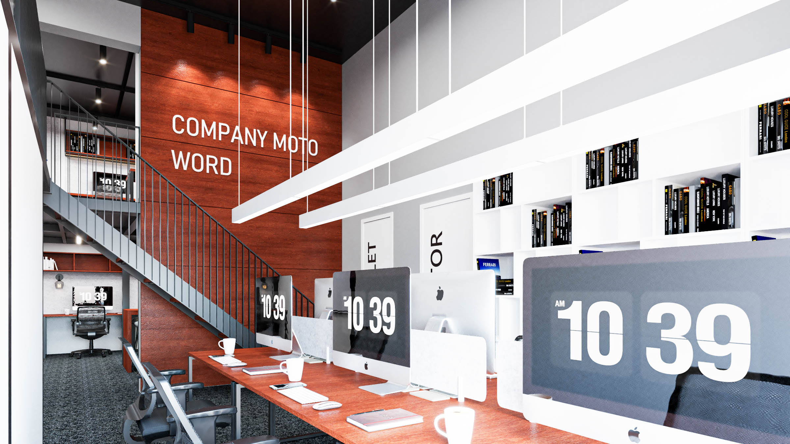

02 of 03 · Service
Eco-Sourcing
a library, not a catalogue.
A material library built on traceability. Reclaimed timbers, low-carbon plasters, recycled textiles, and a botany of plants specified by climate and care.

300+
Library samples
412
Plants placed
400km
Sourcing radius
The Approach
A method,
in five movements.
We work the same way on every project — not because the work is repetitive, but because the discipline is. The room changes; the method is the constant.
01
Traceable by default
Every material in the studio library is documented at the source — forest, quarry, mill, loom. If we cannot trace it, we do not specify it.
02
Low-carbon plasters
Lime, clay, and hempcrete finishes that breathe, regulate humidity, and store carbon. Specified by room volume and climate zone.
03
Reclaimed timber
A standing stock of salvaged oak, larch, walnut, and elm from buildings within a 400-kilometre radius. Documented, cut, and ready.
04
Recycled textiles
Bouclés, wools, and felts spun from post-consumer waste — without compromise on hand. Sample books in three weights.
05
A botany by care
Planting schemes specified by light, humidity, and the time your facilities team can actually give them. No orchids on rotation.
“A material is a long sentence. Provenance is the verb that holds it up.”
— The Studio
Selected Rooms
Where the method becomes a room.
Room № 01Eco-Sourcing
Room № 02Eco-Sourcing
Room № 03Eco-Sourcing
What's Included
Eight deliverables.
No surprises.
Every engagement carries the same scope. The size of the room changes, but the rigour does not — you receive each of these on every project.
- Material library access (300+ samples)
- Source documentation & chain of custody
- Embodied-carbon estimates per scheme
- Reclaimed timber sourcing & milling
- Low-VOC finish specification
- Recycled-textile fabric books
- Planting plan with care schedule
- End-of-life disassembly notes
Next Service
Continue
Project Management
Read More
Commission